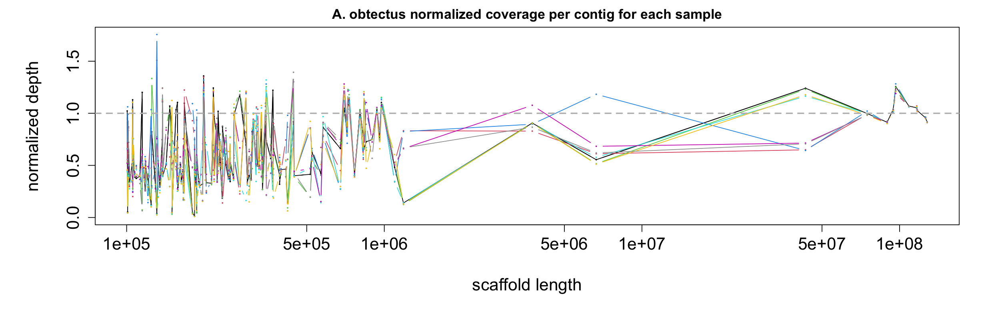
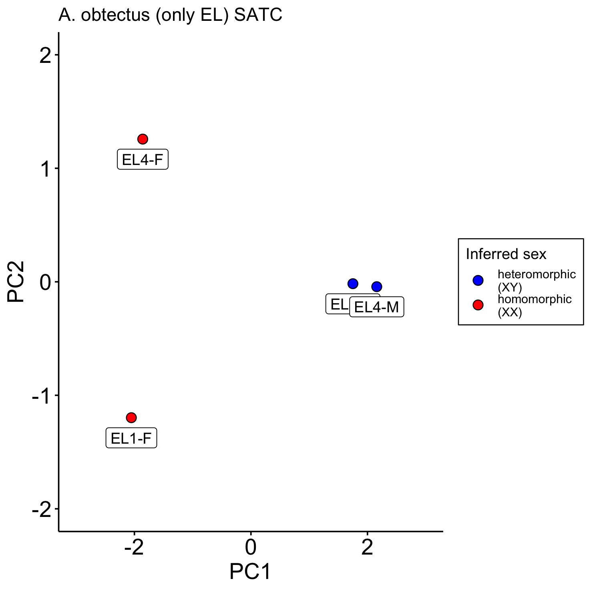
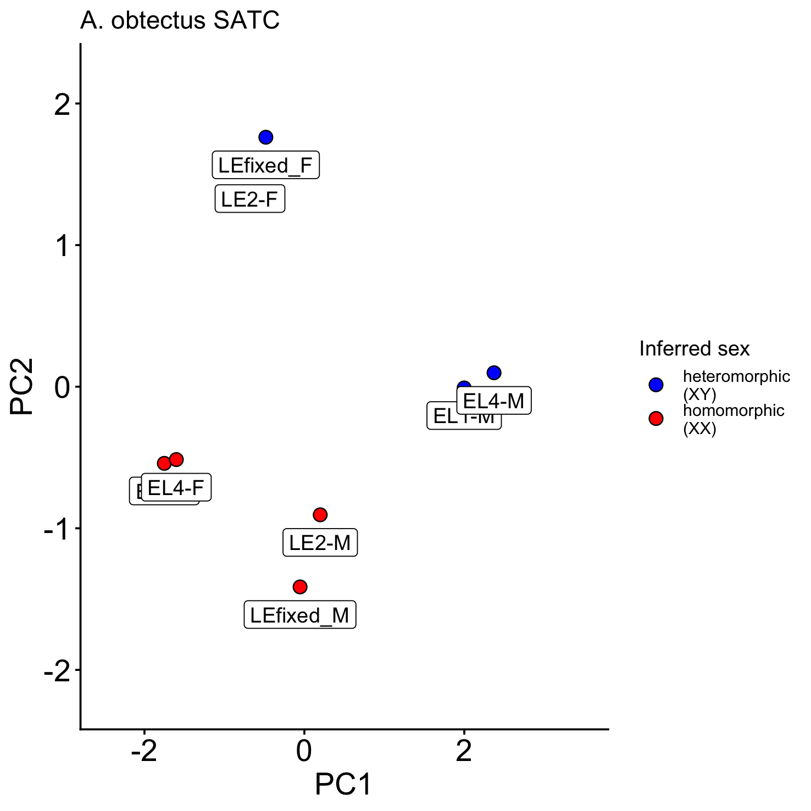
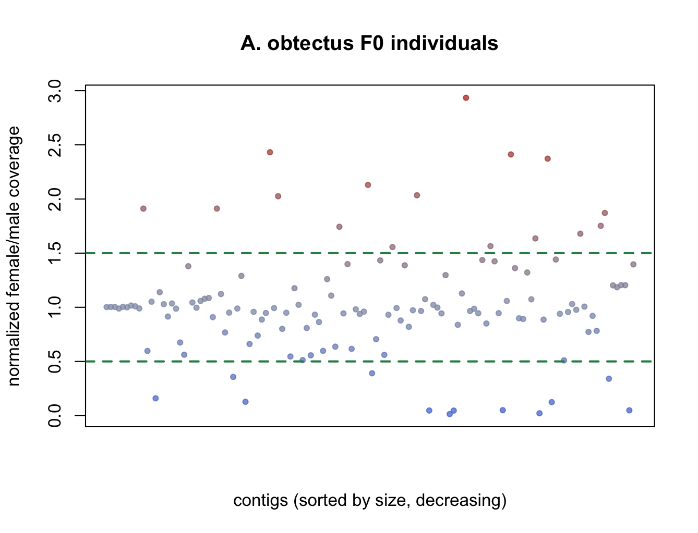
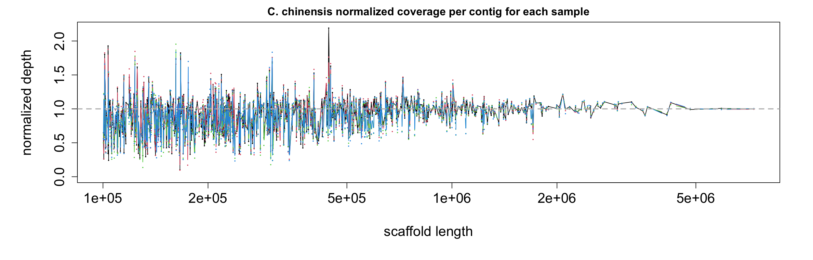
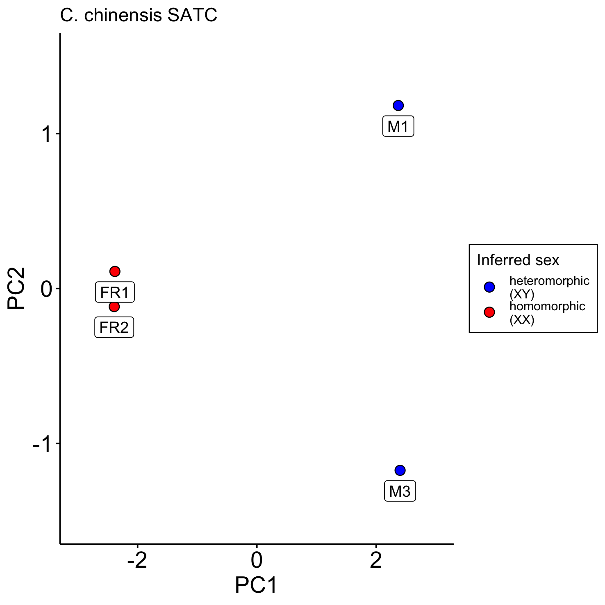
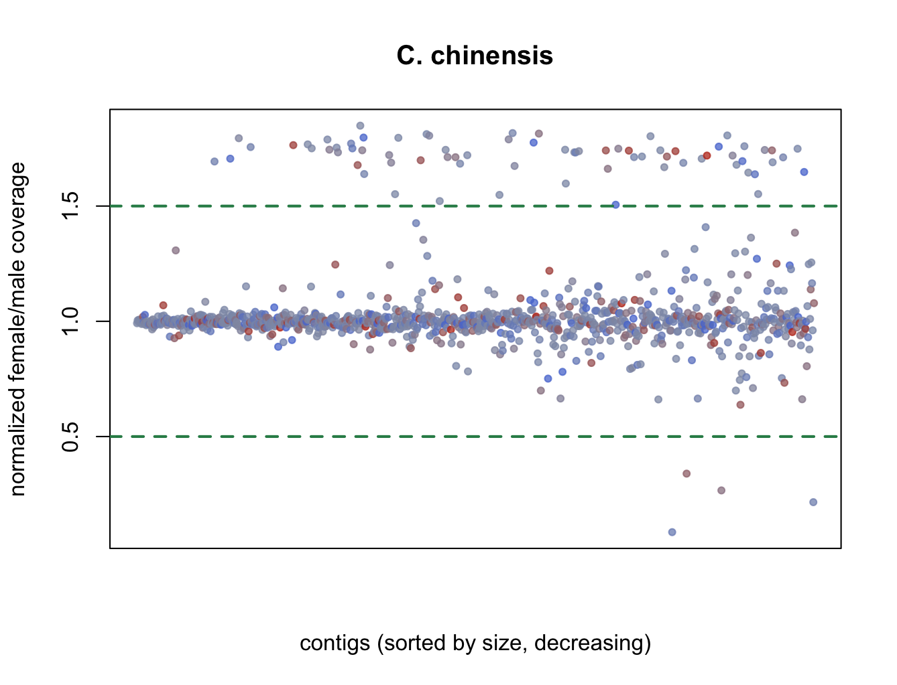

PhD Chapter 2, Git repository. File and directory paths mentioned below refer to the repository.
Git repository here, background reading here
Methods and pipeline
toggle down for flowchart
graph TD
species([Bruchids, maybe others from DTOL]);
species --> species_Ass(species assemblies);
species --> species_Ann(species annotations, RNAseq based, native);
species --> species_rep(species repeat annotation)
species_Ass --> all_chr(X,Y,A chromosomes);
species_Ann -- gffread --> proteins(protein sequences);
blast{{BRH blast for within-species analysis}};
blast_between{{BRH blast for between-species analysis, 1to1}};
orthofinder{{orthofinder, orthogroups for between-species analysis}};
all_chr --> wgs_al(between-species genome sequence alignment);
wgs_al --> stats_comp([comparison of sequence characteristics such as gene density, repeat abuncance, insertions deletions, and whatever else I think of]);
all_chr --> all_prot(X,Y,A proteins);
proteins --> all_prot;
all_prot --> blast;
blast --> xy(XY paralogs);
blast --> ay(AY paralogs);
all_prot .-> blast_between;
blast_between .-> Y_hom(exclusively Y-linked homologs);
blast_between .-> YA_hom(mixed Y and A linked homologs);
blast_between .-> YX_hom(mixed Y and X linked homologs);
all_prot --> orthofinder;
orthofinder --> Y_hom(exclusively Y-linked homologs);
orthofinder --> YA_hom(mixed Y and A linked homologs);
orthofinder --> YX_hom(mixed Y and X linked homologs);
xy --> circos([circos plot of paralogs]);
ay --> circos;
xy --> revis{{ReVis}};
ay --> revis;
species_rep --> revis;
revis --> questions([Which TE classes are enriched in XY vs XA paralogs?])
Y_hom --> function([functional enrichment]);
YA_hom --> function;
YX_hom --> function;
Data
Annotation version
I have two versions of the annotation from chapter 1, the native ones from the NCBI, and the uniform ones without RNAseq data. I think the best of both worlds would be to use the uniform annotation, and supplement in C. maculatus with comprehensive RNAseq data to tag expressed genes.
Species selection
This is a bit difficult, since so few Y are identified.
I have tried to identify the T. castaneum Y through coverage differences with short read WGS data, but it didn't work.
Species lists and notes
Maybe include different Cmac assembly? Chinese academy of sciences one, and/or well as YL.→ all Chrysomelidae that have a Y and an annotation on the NCBI
GCA_058970975.1 Acanthoscelides obtectus
GCA_949316355.1 Bruchidius siliquastri
GCA_964204745.1 Bruchidius varius
GCA_058970565.1 Callosobruchus maculatus (Chinese academy of sciences)
GCA_026250575.1 Diorhabda carinulata # this is the one with the annotation, but the ritght X is only in GCA_026250575.2
GCA_026230105.1 Diorhabda sublineataCallosobruchus chinensis
Callosobruchus maculatus Y_s
Callosobruchus maculatus Y_lGCA_982264245.1 Chrysolina hyperici
GCA_958507055.1 Crioceris asparagi
GCA_963576515.1 Cryptocephalus primarius
GCA_029229535.1 Diorhabda carinata
GCA_026230145.1 Diorhabda elongata
GCA_963921935.1 Galeruca laticollis
GCA_980434365.1 Galerucella sagittariae
GCA_965641405.1 Gastrophysa viridula
GCA_947563755.1 Lochmaea crataegi
GCA_979016925.1 Phaedon cochleariae
GCA_982319415.1 Phaedon tumidulus
GCA_980253055.1 Podagrica fuscicornisFull tree with species regardless of annotation:
Software and methods
sequence divergence
Mahajan 2017 use Ka vs. Ks to identify relative gene age, maybe re-use some chapter 3 code?pairwise wga
Dig up the existing code I have.Sex chromosome identification
I used the SATC package in R, code here:PhD_chapter2/src/SATC_analysis_sex_chr_ident.Rmd
- Acanthoscelides obtectus: Identified by me (see below)
- Bruchidius siliquastri: Identified by DTOL
- Bruchidius varius: Identified by DTOL
- Callosobruchus maculatus: Identified by Philipp in Kaufmann 2023
- Callosobruchus chinensis: Identified by me (see below)
- Diorhabda carinulata: Identified by USDA (In the assembly/annotation version I use, X and chr_1 have switched labels, it has been since updated in a new version of the annotation, where the labels are corrected, but the annotation is not lifted over. Therefore I will keep this old version, and just switch the labels myself when relevant)
- Diorhabda sublineata: Identified by USDA
SATC results
The samples are the F0 from the E/L lines:
obtectus/obtectus/Sample_VA-3193-EL1-F.sort.MarkDup.RG.filter.bam.idxstats
obtectus/obtectus/Sample_VA-3193-EL1-M.sort.MarkDup.RG.filter.bam.idxstats
obtectus/obtectus/Sample_VA-3193-EL4-F.sort.MarkDup.RG.filter.bam.idxstats
obtectus/obtectus/Sample_VA-3193-EL4-M.sort.MarkDup.RG.filter.bam.idxstats
obtectus/obtectus/Sample_VA-3193-LE2-F.sort.MarkDup.RG.filter.bam.idxstats
obtectus/obtectus/Sample_VA-3193-LE2-M.sort.MarkDup.RG.filter.bam.idxstats
obtectus/obtectus/Sample_VA-3193-LEfixed_F.sort.MarkDup.RG.filter.bam.idxstats
obtectus/obtectus/Sample_VA-3193-LEfixed_M.sort.MarkDup.RG.filter.bam.idxstatsScaffolds are filtered for min length 1e5

Sample sex determination according to SATC:
The male and female samples for LE1 were accidentally swapped, so I renamed them LEfixed with the right sex assignment. But it seems like it
would have been right before? I am unsure what is going on here, I will just remove the LE samples all together since LE2 is also wrong.
"Sample_VA-3193-EL1-F" "homomorphic"
"Sample_VA-3193-EL1-M" "heteromorphic"
"Sample_VA-3193-EL4-F" "homomorphic"
"Sample_VA-3193-EL4-M" "heteromorphic"
"Sample_VA-3193-LE2-F" "heteromorphic"
"Sample_VA-3193-LE2-M" "homomorphic"
"Sample_VA-3193-LEfixed_F" "heteromorphic"
"Sample_VA-3193-LEfixed_M" "homomorphic"PCA plot with only EL samples

PCA plot with all samples (note the wrong sex assignment of LE samples)

Results:
(Not multiple-testing corrected, min. scaffold length threshold set to 1e5.)

Table with contig lists assigned to X and Y: data/SATC/contig_coverage_sex_ratio_obtectus.csv
The samples are the ones I sequenced for sex chromosome identification:
coleoptera_samples/chinensis-FR1new_ref.bam.idxstats
coleoptera_samples/chinensis-FR2new_ref.bam.idxstats
coleoptera_samples/chinensis-M1new_ref.bam.idxstats
coleoptera_samples/chinensis-M3new_ref.bam.idxstats Scaffolds are filtered for min length 1e5

Sample sex determination according to SATC:
"chinensis-FR1new_ref.bam.idxstats" "homomorphic"
"chinensis-FR2new_ref.bam.idxstats" "homomorphic"
"chinensis-M1new_ref.bam.idxstats" "heteromorphic"
"chinensis-M3new_ref.bam.idxstats" "heteromorphic"PCA plot (females are labelled FR because the sexing in the original pooled samples was not 100% right and I had to sequence more).

Results:
(Not multiple-testing corrected, min. scaffold length threshold set to 1e5.)

Table with contig lists assigned to X and Y: data/SATC/contig_coverage_sex_ratio_chinensis.csv